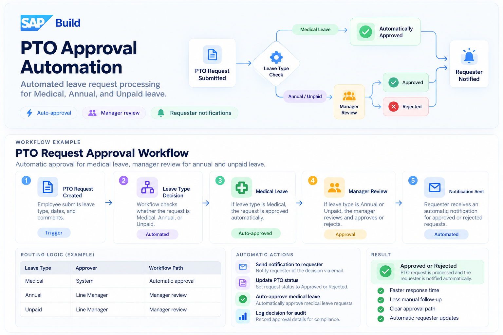

Overview
What it does
- Routes each PTO request by leave type
- Approves medical leave automatically
- Sends annual and unpaid leave to the line manager
- Notifies the requester and logs every decision
What it solves
- No manual routing of leave requests
- No waiting on requests that need no decision
- No chasing managers or requesters for outcomes
- No gaps in the record of who approved what

How a request moves through the workflow
- 1
PTO request created Trigger
The employee submits a request with the leave type, dates and any comments. Submitting it starts the workflow.
- 2
Leave type decision Automated
The workflow checks whether the request is Medical, Annual or Unpaid and sends it down the matching path.
- The request then takes one of two paths:
- 3
Medical leave Auto-approved
Medical leave is approved automatically, with no one needing to act on it.
- 4
Manager review Approval
Annual and unpaid leave go to the line manager, who reviews the request and approves or rejects it.
- 5
Notification sent Automated
Whatever the outcome, the requester automatically receives a notification that the request was approved or rejected.
Who approves what
The leave type decides the path: requests that need no judgement are handled by the system, and the rest go to the person who can decide.
| Leave type | Approver | Workflow path |
|---|---|---|
| Medical | System | Automatic approval |
| Annual | Line Manager | Manager review |
| Unpaid | Line Manager | Manager review |
What happens without anyone clicking
Requester notification
The requester is emailed the decision as soon as it is made.
PTO status update
The request's status is set to Approved or Rejected automatically.
Medical leave auto-approval
Medical leave requests are approved without waiting for a manager.
Audit log
Every decision is recorded with its approval details for compliance.
Approved or rejected
Every request ends with a clear decision, and the requester hears about it without having to ask.
With this workflow we achieve faster responses, because medical leave is approved instantly and the rest goes straight to the right manager. There is less manual follow-up, since no one has to route requests or chase decisions. Everyone gets a clear approval path for each leave type, and requesters are updated automatically the moment a decision is made.